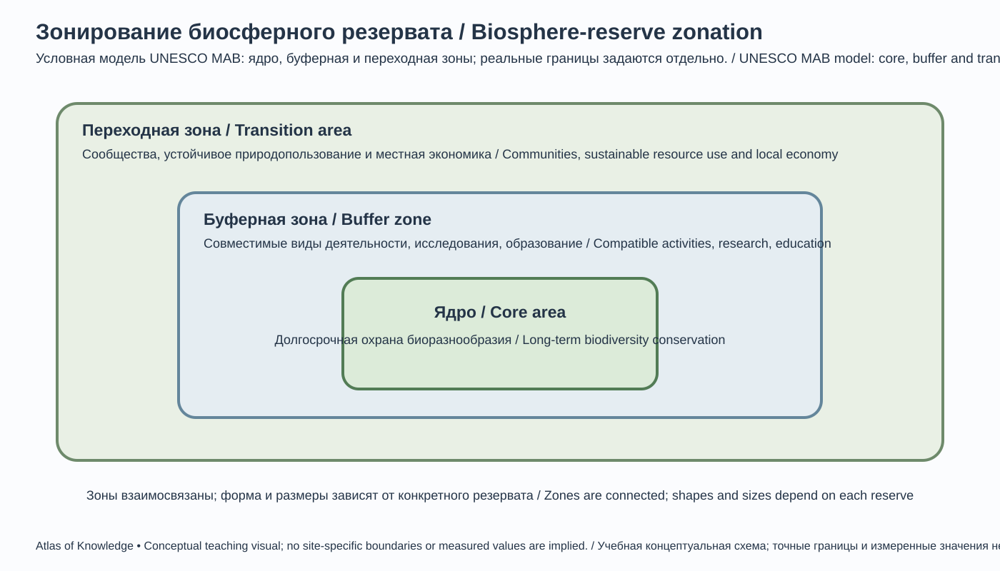
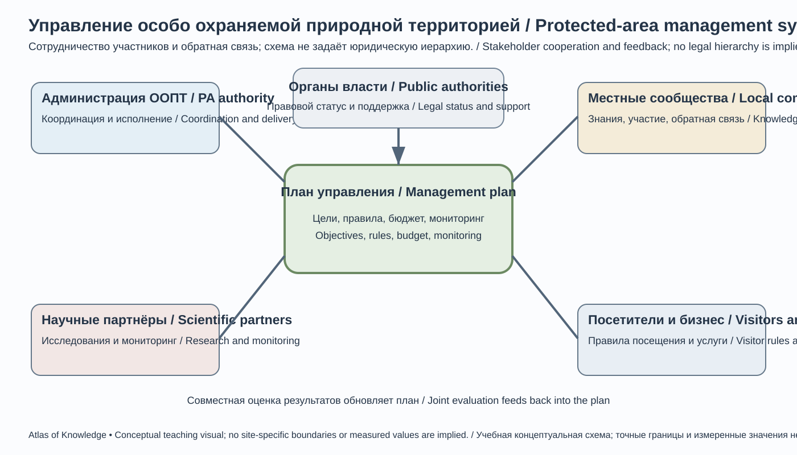
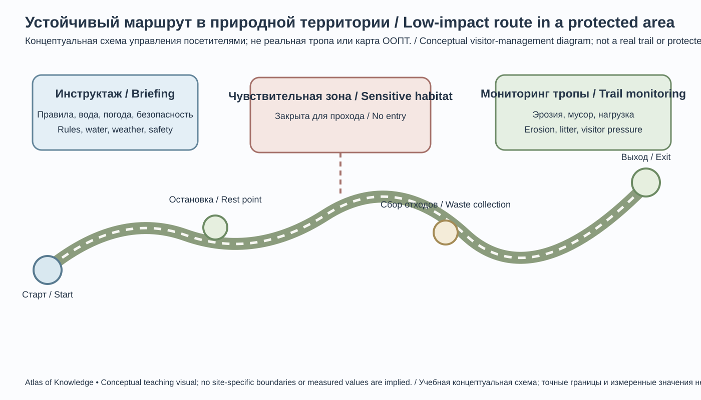
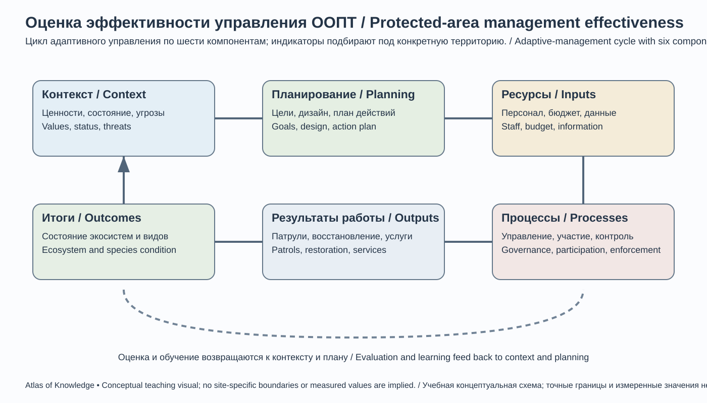

Глава 22. Природные зоны, заповедники и национальные парки Кыргызстана
Chapter 22. Natural Zones, Nature Reserves and National Parks of Kyrgyzstan
Тема главы / Chapter theme: природно-территориальные комплексы Кыргызстана, система особо охраняемых природных территорий (ООПТ), биосферные резерватные территории, национальные парки и управление природным наследием.
Ключевая идея / Key idea: эффективная охрана природы требует сохранения не только отдельных видов и красивых ландшафтов, но и целостности экосистем, водосборов, сезонных миграционных путей и связей между охраняемыми территориями.
22.1. Природная зональность горной страны
Natural Zonation of a Mountain Country
Кыргызстан расположен в центре Тянь-Шаня и на северной окраине Памиро-Алая. Горный рельеф определяет сложную мозаику природных комплексов: сухие предгорья и межгорные котловины соседствуют с лесистыми ущельями, высокогорными степями, лугами, скальными массивами и ледниковыми областями.
В отличие от равнинных территорий, где природные зоны часто вытянуты широтными полосами, в Кыргызстане особенно заметна высотная поясность. На распределение природных комплексов влияют: - абсолютная высота и крутизна склонов; - экспозиция (ориентация склона относительно сторон света); - количество и сезонность осадков; - температура, ветер и продолжительность снежного покрова; - геологическое строение и типы почв; - лавинные, селевые и эрозионные процессы; - выпас, земледелие, лесопользование и инфраструктура.
Основные природные комплексы
| Природный комплекс | Типичные ландшафты | Основные экологические особенности |
|---|---|---|
| Сухие предгорья и котловины | Полупустыни, полынники, эфемеровые степи | Дефицит влаги, сезонная продуктивность |
| Предгорные и среднегорные степи | Злаково-разнотравные сообщества, кустарники | Зависимость от осадков, почв и выпаса |
| Лесные горные комплексы | Ельники, арчовые редколесья, орехоплодовые и пойменные леса | Защита водосборов, почв и местообитаний |
| Субальпийские и альпийские луга | Высокотравные и низкотравные луга, кобрезиевые сообщества | Короткий вегетационный период, сезонный выпас |
| Высокогорные степи и холодные пустыни | Разреженные злаковые, осоковые и полынные сообщества | Континентальность, морозы, ветер |
| Скально-нивальные комплексы | Скалы, осыпи, снежники и ледники | Ограниченная растительность, высокая чувствительность к потеплению |
| Водно-болотные и пойменные комплексы | Озёра, болота, дельты, поймы, тугайные заросли | Ключевые местообитания водоплавающих птиц и водных организмов |
Границы этих комплексов динамичны и локальны. Одна и та же высота может соответствовать лесу на влажном склоне и степи на сухом. Поэтому карта природных зон должна показывать региональные различия, а не проводить универсальные высотные линии через всю страну.
Kyrgyzstan lies in the central Tien Shan and along the northern margin of the Pamir-Alay. Its mountainous relief creates a fine-grained mosaic of ecosystems: dry foothills and intermontane basins occur alongside forested gorges, mountain steppes, alpine meadows, rocky terrain and glacial environments.
Altitudinal zonation is especially important. The distribution of ecosystems depends not only on elevation, but also on slope aspect and steepness, precipitation and its seasonality, temperature, wind, snow-cover duration, geology, soils and land use. Grazing, cultivation, forestry and infrastructure can modify natural patterns.
The main landscape groups include dry foothills and basins; foothill and middle-mountain steppes; mountain forests, including spruce, juniper, walnut-fruit and riparian communities; subalpine and alpine meadows; high-mountain steppes and cold deserts; rocky and nival environments; and wetlands, lake shores, river deltas and floodplains.
These boundaries are local and dynamic. At the same elevation, a moist slope may support forest while a dry slope supports steppe. A national vegetation map should therefore represent regional variation rather than impose one universal set of elevation bands across the country.
22.2. Что такое особо охраняемая природная территория
What Is a Protected Area?
Особо охраняемая природная территория (ООПТ) — участок суши или водной поверхности, для которого установлен специальный режим охраны и использования с целью сохранения природных комплексов, биоразнообразия, геологических объектов, водных систем и природного наследия.
ООПТ выполняют несколько функций: 1. сохраняют места обитания редких и обычных видов; 2. поддерживают естественные экологические процессы; 3. защищают водосборы, почвы и склоны; 4. обеспечивают научные исследования и долгосрочный мониторинг; 5. создают условия для экологического просвещения; 6. при соответствующем режиме поддерживают регулируемый туризм и устойчивое природопользование.
Заповедник, национальный парк и биосферный резерват — не синонимы. У них разные цели, режимы, юридические основания и пространственная организация. Конкретные разрешённые виды деятельности определяются законодательством Кыргызской Республики и положением о каждой территории.
Основные типы охраняемых территорий
- Государственный природный заповедник: территория с наиболее строгим режимом охраны; приоритет — сохранение природных процессов и научные исследования.
- Государственный природный парк: охрана природных комплексов сочетается с регулируемой рекреацией, экологическим туризмом и просвещением.
- Государственный природный заказник: охрана определённых видов, местообитаний или природных компонентов; режим может быть сезонным или специализированным.
- Памятник природы: отдельный уникальный природный объект — геологический, гидрологический, ботанический или иной.
- Биосферный резерват UNESCO MAB: территория в международной программе «Человек и биосфера», организованная по функциональным зонам для сочетания охраны, устойчивого развития и исследований. Статус MAB сам по себе не заменяет национальный правовой режим ООПТ.
- Водно-болотное угодье Ramsar: территория международного значения для сохранения водно-болотных экосистем. Рамсарский статус не равен категории национального заповедника.
A specially protected natural area (protected area, PA) is a land or water area assigned a specific conservation and use regime to protect ecosystems, biodiversity, geological features, water systems or natural heritage.
Protected areas can conserve habitats and species, maintain ecological processes, protect watersheds and soils, support research and long-term monitoring, provide environmental education and—where the applicable rules allow it—host regulated recreation and sustainable nature-based activities.
A state nature reserve, a state nature park and a UNESCO biosphere reserve are not interchangeable terms. They differ in purpose, legal basis, zoning and permitted activities. The rules for each site are determined by Kyrgyz legislation and the site's approved regulations.
The Protected Areas Law also recognises additional categories, including state botanical gardens, dendrological and zoological parks, and biosphere territories or reserves. This chapter focuses on the principal landscape-scale categories and international designations; it does not imply that the list below exhausts every legal category.
The main types described in this chapter are:
- State nature reserve: generally the strictest national conservation category, prioritising natural processes and scientific research.
- State nature park: combines conservation with regulated recreation, ecotourism and environmental education.
- State nature sanctuary (zakaznik): protects specified species, habitats or natural components; restrictions may be seasonal or targeted.
- Natural monument: protects an individual outstanding geological, hydrological, botanical or other natural feature.
- UNESCO Man and the Biosphere (MAB) biosphere reserve: an internationally recognised area organised around core, buffer and transition functions. MAB designation does not replace national law or automatically impose one uniform prohibition regime.
- Ramsar Site: a wetland recognised as internationally important. Ramsar status is not itself the same as a national nature-reserve category.
22.3. Система ООПТ Кыргызстана: масштабы и статистика
Kyrgyzstan’s Protected-Area System: Coverage and Statistics
Сеть ООПТ Кыргызстана включает государственные природные заповедники, природные парки, заказники, памятники природы и территории, признанные в рамках международных природоохранных программ.
Для статистики важно не смешивать: - число заповедников и парков; - число всех ООПТ, включая заказники и памятники природы; - площадь юридически учреждённых территорий; - площадь лесного фонда; - площадь биосферных резерватов и объектов международного признания; - долю территории страны, фактически покрытую режимом охраны.
Национальный статистический комитет публикует показатель 23 государственных заповедника и природных парка в 2021–2025 годах. Отдельная статистическая серия указывает суммарную площадь государственных заповедников и природных парков 1 305,5 тыс. га (1,3055 млн га) в 2025 году. Эти показатели относятся именно к указанной статистической категории, а не ко всем возможным формам ООПТ.
В публикации ПРООН 2025 года сообщалось, что доля особо охраняемых природных территорий выросла с 3,8% в 2010 году до 7,4% в 2025 году. Ранее Министерство природных ресурсов в публикации от 9 апреля 2024 года приводило оценку 7,38% и отдельную разбивку по заповедникам, паркам и заказникам. Эти значения близки, но относятся к разным датам и публикациям; для точного сопоставления необходимы единые определения и реестр границ. В других официальных и международных источниках встречаются отличающиеся значения из-за разных дат, категорий и методик подсчёта. Поэтому в атласе процент охраняемой территории всегда должен сопровождаться годом, определением категории и ссылкой на источник.
Kyrgyzstan's protected-area network includes state nature reserves, state nature parks, sanctuaries, natural monuments and sites recognised through international conservation programmes.
Statistics must be read by category. The number of state reserves and parks is not the same as the number of all protected areas. Likewise, the area of legally designated reserves and parks must not be confused with forest-fund land, UNESCO biosphere-reserve boundaries or Ramsar sites. International designations can overlap with national protected areas, so their areas must not simply be added together.
The National Statistical Committee's open-data series records 23 state nature reserves and state nature parks in each year from 2021 to 2025. Its separate area series reports 1,305.5 thousand hectares (1.3055 million ha) in 2025 for the combined category “state nature reserves and natural parks”. This is a category-specific indicator, not the total area of every form of protected area in the country. The two series should be cited with their year and exact category.
A separate Ministry of Natural Resources release dated 9 April 2024 reported 10 state nature reserves (509,952.7 ha), 13 state nature parks (724,670.2 ha) and 64 state nature sanctuaries (241,398.7 ha), with a stated total protected-area share of 7.38%. The reserve-and-park area in that release (1,234,622.9 ha) does not equal the NSC's 2025 figure of 1,305,500 ha. The available summary pages do not explain the difference. These figures must therefore remain separately attributed and dated; do not silently merge them or present the discrepancy as resolved. The Ministry's current public overview page is a site list, not a complete cadastral register, and its displayed list should not be used to infer a definitive national count.
A UNDP publication in 2025 reported that the share of specially protected natural areas increased from 3.8% in 2010 to 7.4% in 2025. This percentage uses a broader or otherwise different accounting basis from the NSC area series for reserves and parks alone. It should not be calculated by dividing 1.3055 million ha by the country's total area, nor combined with other international figures without checking definitions, dates and overlaps.
| Indicator | What it measures | What it does not establish by itself |
|---|---|---|
| Number of reserves and parks | Count of sites in specified national categories | Whether all ecosystems are adequately protected |
| Protected-area extent | Spatial area under the stated designation | Management quality or enforcement |
| Share of national territory | Ratio of a defined PA area to the national area | Ecological connectivity or conservation outcomes |
| Number of protected species | Species included in a specified list | Population size or population trend |
| Budget and staffing | Resources available for management | Conservation results without ecological indicators |
Как читать статистику ООПТ
| Показатель | Что он означает | Чего он сам по себе не показывает |
|---|---|---|
| Число заповедников и парков | Количество территорий определённых категорий | Полноту охраны экосистем |
| Площадь ООПТ | Пространственный охват установленного режима | Качество управления и соблюдение режима |
| Доля территории страны | Отношение площади выбранных ООПТ к площади страны | Связность участков и реальную эффективность |
| Число охраняемых видов | Количество видов в конкретном списке | Состояние популяций и динамику численности |
| Бюджет и персонал | Ресурсы управления | Результат без показателей состояния природы |
22.4. Государственные природные заповедники
State Nature Reserves
Заповедники предназначены прежде всего для строгой охраны природных комплексов. Они особенно важны для сохранения эталонных экосистем, научного наблюдения и защиты видов, чувствительных к беспокойству.
State nature reserves are national protected-area institutions whose primary purpose is the strict conservation of natural complexes and ecological processes. They provide reference sites for scientific research and long-term monitoring, and protect habitats where disturbance can be especially damaging.
Сары-Челекский государственный биосферный заповедник
Расположен в Западном Тянь-Шане, в Джалал-Абадской области, на южных отрогах Чаткальского хребта. Территория включает озеро Сары-Челек, горные леса, луга, степи, скальные и осыпные местообитания. Высотный диапазон биосферного резервата по данным UNESCO MAB составляет приблизительно 1 200–4 247 м.
Сары-Челек включён во Всемирную сеть биосферных резерватов UNESCO в 1978 году. Его ценность связана с сочетанием лесных и водных экосистем, богатой флорой, дикими плодовыми и орехоплодными сообществами. Необходимо различать границы собственно государственного заповедника и более широкой биосферной территории.
Беш-Аральский государственный природный заповедник
Расположен в Западном Тянь-Шане, в Джалал-Абадской области. Его природоохранное значение связано с горными экосистемами, редкими растениями и животными, а также трансграничным природным комплексом Западного Тянь-Шаня. Территория важна для сохранения местообитаний западнотянь-шаньских видов и поддержания экологической связности.
Падыша-Атинский государственный природный заповедник
Находится в Джалал-Абадской области и известен охраной арчовых лесов и горных экосистем. Арчовые сообщества имеют важное значение для защиты склонов, сохранения почв и поддержания местообитаний животных.
Нарынский государственный природный заповедник
Представляет природные комплексы Внутреннего Тянь-Шаня, включая лесные и высокогорные экосистемы. Важен для сохранения горных лесов, водосборов и местообитаний диких животных.
Иссык-Кульский государственный заповедник
Создан для охраны водно-болотных угодий и местообитаний птиц на озере Иссык-Куль. Особое значение имеют сезонные скопления водоплавающих и околоводных птиц, прибрежные участки и островные местообитания. Следует различать заповедные участки и всю территорию Иссык-Кульского биосферного резервата.
Каратал-Жапырыкский государственный заповедник
Связан с охраной высокогорных озёр и водно-болотных местообитаний, в том числе районов Сон-Куля и Чатыр-Куля. Эти территории важны для гнездования и остановок мигрирующих птиц, включая горного гуся и другие водоплавающие виды.
Другие государственные заповедники
В официальных перечнях Министерства природных ресурсов также указаны Кулун-Атинский и Сурматашский государственные природные заповедники. Их значение связано с сохранением горных экосистем южной части страны. При выпуске карты и справочника необходимо сверить актуальные официальные границы, площади и режимы каждой территории.
Sary-Chelek State Biosphere Nature Reserve. Located in the Western Tien Shan in the Jalal-Abad region, on the southern slopes of the Chatkal Range. Its landscape includes Lake Sary-Chelek, mountain forests, meadows, steppes, cliffs and scree habitats. UNESCO's biosphere-reserve profile gives an approximate elevation range of 1,200–4,247 metres. The site joined the UNESCO World Network of Biosphere Reserves in 1978. The boundaries of the national nature reserve must be distinguished from those of the wider biosphere reserve.
Besh-Aral State Nature Reserve. Located in the Western Tien Shan in the Jalal-Abad region. Its conservation importance is associated with mountain ecosystems, rare plants and animals, and the transboundary Western Tien-Shan natural complex. It contributes to the protection of habitats and landscape connectivity.
Padysha-Ata State Nature Reserve. Located in the Jalal-Abad region and known for the protection of juniper woodlands and mountain ecosystems. Juniper communities help protect slopes and soils and provide habitats for wildlife.
Naryn State Nature Reserve. Represents ecosystems of the Inner Tien Shan, including forest and high-mountain environments. It is important for mountain forests, watersheds and wildlife habitats.
Issyk-Kul State Nature Reserve. Established to protect wetlands and bird habitats around Lake Issyk-Kul. Seasonal concentrations of waterbirds, coastal habitats and islands are especially important. The reserve's protected sites are not identical to the much larger Issyk-Kul Biosphere Reserve.
Karatal-Zhapyryk State Nature Reserve. Protects high-mountain lakes and wetland habitats, including areas around Son-Kul and Chatyr-Kul. These sites provide breeding and stopover habitat for migratory birds, including the bar-headed goose and other waterbirds.
Other state nature reserves. The Ministry's public overview also lists Kulun-Ata and Surmatash state nature reserves. Their importance is associated with the conservation of mountain ecosystems in the south of the country. Exact boundaries, areas and legal regimes should be checked against the current official register before publication or map production.
22.5. Государственные природные парки и национальные парки
State Nature Parks and National Parks
State nature parks combine the conservation of landscapes and biodiversity with regulated recreation, environmental education and, where their management rules permit, sustainable local use. The existence of a park does not mean that every activity is allowed throughout its territory: zoning and site-specific regulations determine what visitors and residents may do.
Природные парки обеспечивают охрану ландшафтов и одновременно могут допускать регулируемую рекреацию, экологический туризм, просвещение и традиционное использование отдельных ресурсов в соответствии с установленным режимом.
Ала-Арча
Национальный природный парк в Кыргызском хребте недалеко от Бишкека. Характерные объекты — горные ущелья, реки, хвойные леса, альпийские луга, скалы и ледниковые формы рельефа. Территория имеет большое значение для экологического образования и рекреации, но высокая посещаемость требует управления тропами, отходами, транспортом и пожарными рисками.
Кыргыз-Ата
Природный парк в Ошской области, связанный с горными ландшафтами и арчовыми сообществами. Важны сохранение лесных склонов, регулирование рекреации и предотвращение эрозии.
Каракол
Парк в районе Терскей-Ала-Тоо. В его природном комплексе сочетаются горные ущелья, лесные участки, луга, реки и высокогорные ландшафты. Туристическая нагрузка должна учитывать состояние троп, водных объектов и местообитаний диких животных.
Беш-Таш
Расположен в Таласской области. Сочетает горные лесные и луговые ландшафты, речные долины и озёрные комплексы. Важен для охраны водосборов и природных комплексов Таласского Ала-Тоо.
Чон-Кемин
Горная долина и прилегающие хребты образуют комплекс лесных, луговых и высокогорных местообитаний. Парк имеет значение для сохранения ландшафтной связности, традиционного природопользования и устойчивого туризма.
Саймалуу-Таш
Природный парк в Джалал-Абадской области, известный высокогорными ландшафтами и археологическим наследием — петроглифами. Это пример территории, где природная охрана и культурное наследие требуют согласованного управления. Доступ и посещение отдельных участков зависят от сезона и установленного режима.
Хан-Тенири
Природный парк в восточной части Кыргызстана, в высокогорной области Центрального Тянь-Шаня. Его значение связано с исключительными горными ландшафтами, ледниками, высокогорной фауной и альпинистским туризмом. Визитная деятельность требует особого внимания к безопасности, отходам, санитарным условиям и воздействию на хрупкие высокогорные экосистемы.
Другие парки
В перечнях природных парков также встречаются Салкын-Тор и другие территории. Для окончательного справочника необходимо использовать действующий реестр Министерства природных ресурсов: названия, категория, площадь и статус отдельных объектов могут изменяться.
Ala-Archa. A state nature park in the Kyrgyz Range near Bishkek. Its characteristic features include mountain gorges, rivers, coniferous forests, alpine meadows, cliffs and glacial landforms. It is important for environmental education and recreation. High visitor numbers make trail management, waste control, transport planning and fire prevention essential.
Kyrgyz-Ata. A nature park in Osh Region associated with mountain landscapes and juniper communities. Conservation priorities include protecting wooded slopes, regulating recreation and preventing erosion.
Karakol. Located in the Terskey Ala-Too area. Its natural complex includes mountain gorges, forest patches, meadows, rivers and high-mountain landscapes. Visitor management should consider trail condition, water quality and wildlife habitats.
Besh-Tash. Located in Talas Region. It combines mountain forests and meadows, river valleys and lake landscapes, and is important for protecting watersheds and the natural complexes of the Talas Ala-Too.
Chon-Kemin. The mountain valley and surrounding ranges form a complex of forest, meadow and high-mountain habitats. The park is important for landscape connectivity, traditional land use and sustainable tourism.
Saimaluu-Tash. A nature park in Jalal-Abad Region, known for high-mountain landscapes and archaeological petroglyphs. It illustrates the need to coordinate nature conservation and cultural-heritage management. Access to some sites depends on season and applicable rules.
Khan-Tengiri. A nature park in eastern Kyrgyzstan in the high-mountain Central Tien Shan. Its significance is linked to exceptional mountain landscapes, glaciers, high-mountain wildlife and mountaineering. Visitor management must address safety, waste, sanitation and the vulnerability of high-altitude ecosystems.
Other parks. Salkyn-Tor and other sites appear in historical and sectoral lists. The current official register should be used to verify names, legal categories, areas and status; older tourism lists are not a substitute for a legal inventory.
22.6. Биосферные территории UNESCO

22-F. Модель UNESCO MAB. Это не геометрия конкретного резервата: реальные границы и режимы определяются номинацией и национальным законодательством.UNESCO MAB model. This is not the geometry of a specific reserve; real boundaries and rules are set by its nomination and national law.
EN: Biosphere-reserve diagram showing core, buffer and transition zones; use a conceptual example if official geometry is unavailable.
UNESCO Biosphere Reserves
Программа UNESCO «Человек и биосфера» (Man and the Biosphere Programme, MAB) направлена на сочетание сохранения биоразнообразия, устойчивого развития и научного мониторинга.
Биосферный резерват обычно организуется через три функциональные зоны: - ядро (core area): строго охраняемые участки, сохраняющие экосистемы и виды; - буферная зона (buffer zone): деятельность, совместимая с природоохранными целями, исследованиями и экологическим образованием; - переходная зона (transition area): устойчивое природопользование, проживание и хозяйственная деятельность местных сообществ.
Функциональные зоны MAB не следует автоматически приравнивать к юридическим категориям национального законодательства.
UNESCO's Man and the Biosphere Programme (MAB) seeks to reconcile biodiversity conservation, sustainable development and scientific monitoring. Biosphere reserves are commonly organised through three complementary functions: a core area for long-term conservation; a buffer zone where compatible activities, research and education may take place; and a transition area where communities pursue sustainable livelihoods. MAB functional zoning should not automatically be treated as identical to the legal categories or boundaries established under Kyrgyz national law.
Сары-Челек
Номинирован в сеть MAB в 1978 году. Резерват включает лесные, луговые, степные, скальные и водные местообитания Западного Тянь-Шаня. По данным UNESCO, площадь биосферной территории составляет около 44 891 га. Эти данные относятся к биосферному резервату, а не обязательно к площади строгого заповедного ядра.
Иссык-Куль
Биосферная территория Иссык-Куль включена в сеть MAB в 2001 году. Она охватывает обширный горно-озёрный ландшафт, где природные экосистемы соседствуют с населёнными пунктами, сельским хозяйством, туризмом и традиционным природопользованием. По данным UNESCO MAB, её площадь составляет около 4,314 млн га. Поэтому её нельзя изображать как небольшой участок вокруг берега озера.
Sary-Chelek. Nominated to the UNESCO MAB network in 1978. The biosphere reserve includes forest, meadow, steppe, rocky and aquatic habitats of the Western Tien Shan. UNESCO reports an area of approximately 44,891 hectares. This figure refers to the biosphere reserve and should not be presented as the area of the strict national nature-reserve core.
Issyk-Kul. The Issyk-Kul Biosphere Territory joined the MAB network in 2001. It covers a large mountain-and-lake landscape where natural ecosystems coexist with settlements, agriculture, tourism and traditional land use. UNESCO MAB reports an area of approximately 4.314 million hectares. It must therefore not be depicted as a small strip around the lake shore.
22.7. Международное признание природного наследия
International Recognition of Natural Heritage
Западный Тянь-Шань — объект Всемирного наследия
Трансграничный объект «Западный Тянь-Шань» включён в Список всемирного наследия UNESCO в 2016 году. Он объединяет компоненты в Кыргызстане, Казахстане и Узбекистане. Его ценность определяется исключительным биоразнообразием, сочетанием лесных и горных экосистем, эндемичными и редкими видами, а также дикими родственниками культурных плодовых растений.
В Кыргызстане с этим объектом связаны, в частности, Сары-Челекский, Беш-Аральский и Падыша-Атинский природные комплексы. Международный статус не отменяет национальные законы и планы управления каждой составляющей территории.
Рамсарские водно-болотные угодья
Иссык-Куль, Сон-Куль и Чатыр-Куль включены в международную систему охраны водно-болотных угодий Рамсарской конвенции. Их значение связано с водоплавающими птицами, сезонными миграциями, местами гнездования, линьки и зимовки, а также с сохранением водных экосистем.
Рамсарский статус предполагает разумное использование водно-болотных угодий и поддержание их экологического характера. Он не означает, что любое хозяйственное использование автоматически запрещено.
The transboundary Western Tien-Shan property was inscribed on the UNESCO World Heritage List in 2016. It comprises component parts in Kyrgyzstan, Kazakhstan and Uzbekistan. Its outstanding value is associated with exceptional biodiversity, the combination of forest and mountain ecosystems, endemic and rare species, and wild relatives of cultivated fruit plants. In Kyrgyzstan, the property includes components associated with Sary-Chelek, Besh-Aral and Padysha-Ata. World Heritage status does not replace national law or the management plans applicable to each component.
Ramsar wetlands. Issyk-Kul, Son-Kul and Chatyr-Kul are listed under the Ramsar Convention as wetlands of international importance. They support waterbirds during migration, breeding, moulting and wintering, and conserve important aquatic ecosystems. Ramsar recognition promotes the conservation and wise use of wetlands; it does not mean that all economic activity is automatically prohibited.
22.8. Экологические коридоры и связность ландшафтов
Ecological Corridors and Landscape Connectivity
Охраняемые территории часто представляют собой отдельные участки, разделённые дорогами, поселениями, сельскохозяйственными землями и промышленными объектами. Для многих животных важны не только сами заповедники, но и возможность безопасно перемещаться между ними.
Экологический коридор — территория или система местообитаний, обеспечивающая перемещение организмов и поддержание экологических связей между природными ядрами.
Для горных копытных и снежного барса коридоры могут связывать сезонные пастбища, места размножения и кормовые участки. Для растений связность может обеспечиваться распространением семян животными, ветром и водой.
В 2025 году ПРООН сообщала о продвижении подхода экологической связности и создании экологического коридора «Ак-Илбирс» площадью около 800 000 га. Этот показатель следует сопровождать датой и формулировкой статуса из первоисточника: объявление или проектирование коридора не тождественно созданию отдельной категории ООПТ.
Принципы проектирования коридоров
- Определить целевые виды и экологические процессы.
- Использовать данные о местообитаниях и сезонных перемещениях.
- Выявить барьеры: дороги, ограждения, поселения и зоны интенсивного использования.
- Учитывать интересы местных сообществ и землепользователей.
- Согласовать меры охраны и устойчивого природопользования.
- Создать систему мониторинга эффективности коридора.
Protected areas are often isolated patches separated by roads, settlements, agricultural land and industrial sites. For many species, conservation depends not only on the protected sites themselves but also on the ability to move safely between them.
An ecological corridor is an area or network of habitats that enables organisms to move and maintains ecological connections between core natural areas. For mountain ungulates and the snow leopard, corridors may connect seasonal pastures, breeding areas and feeding grounds. For plants, connectivity may be maintained through seed dispersal by animals, wind and water.
In 2025, UNDP reported progress on the ecological-connectivity approach and the establishment of the Ak-Ilbirs ecological corridor, covering approximately 800,000 hectares. This figure must be accompanied by the date and the status wording used by the original source: an announcement or corridor-design initiative is not equivalent to the creation of a separate legal category of protected area.
Principles for corridor design
- Identify target species and ecological processes.
- Use evidence on habitats and seasonal movements.
- Identify barriers such as roads, fences, settlements and intensively used areas.
- Consider the interests of local communities and land users.
- Coordinate conservation measures with sustainable resource use.
- Establish a system for monitoring corridor effectiveness.
22.8.1. Как выявляют потенциальные экологические коридорыIdentifying Potential Ecological Corridors
Экологический коридор нельзя определить только по тому, что две охраняемые территории расположены сравнительно близко друг к другу. Для животных важна не геометрическая дистанция, а возможность безопасного перемещения через конкретные типы местообитаний и ландшафтные барьеры.
Основные этапы пространственного анализа:
- Выбор целевых видов и процессов. Указывают, для каких животных, растений или экологических процессов требуется связность. Разные виды используют разные высоты, укрытия, кормовые территории и сезонные маршруты.
- Картирование местообитаний. Объединяют полевые наблюдения, спутниковые данные, карты растительности, рельефа, водных объектов и землепользования. Данные должны иметь сопоставимые даты и пространственное разрешение.
- Выявление барьеров и угроз. Учитывают дороги, ограждения, населённые пункты, освещённые участки, интенсивное пастбищное использование, добычу ресурсов и другие факторы. Значимость каждого барьера зависит от вида и сезона.
- Оценка сопротивления ландшафта. В моделях каждому типу поверхности присваивают условную стоимость перемещения. Благоприятное местообитание получает меньшую стоимость, сильный барьер — большую. Эти значения являются гипотезой, которую необходимо обосновывать биологическими данными.
- Моделирование возможных маршрутов. Анализ наименьшей стоимости или теория электрических цепей помогают выявить вероятные направления движения и участки, где потоки могут концентрироваться. Результат показывает потенциальную связность, а не доказывает, что животные действительно используют маршрут.
- Полевое подтверждение и обсуждение. Модель проверяют фотоловушками, следами, генетическими данными, наблюдениями и, если это допустимо, телеметрией. С местными сообществами обсуждают сезонное использование пастбищ, безопасность скота и возможные меры снижения конфликтов.
- Мониторинг результата. После создания переходов или изменения режима землепользования проверяют, изменилось ли использование маршрута, снизилось ли число конфликтов и сохраняется ли качество местообитаний.
Пример интерпретации. Если модель показывает узкий участок между двумя горными массивами, это может быть потенциальным «узким местом» связности. Но прежде чем предлагать там охранные ограничения или строительство перехода, нужно проверить фактические перемещения целевого вида, сезонность, наличие альтернативных маршрутов и последствия для местных жителей.
Учебное задание. На карте выберите две природные территории и нанесите возможные барьеры между ними. Составьте два варианта маршрута для условного вида: один по кратчайшему расстоянию, другой — с учётом качества местообитаний и препятствий. Объясните, какие полевые данные потребуются, чтобы проверить оба варианта. Не публикуйте точные координаты мест размножения редких видов.
An ecological corridor cannot be identified simply because two protected areas are relatively close to each other. For wildlife, geometric distance is less important than the possibility of moving safely through particular habitats and across landscape barriers.
Main stages of spatial analysis:
- Select target species and processes. Specify which animals, plants or ecological processes require connectivity. Different species use different elevations, cover, feeding areas and seasonal routes.
- Map habitats. Combine field observations, satellite data, vegetation maps, terrain, water features and land-use information. Data should have compatible dates and spatial resolution.
- Identify barriers and pressures. Consider roads, fences, settlements, illuminated areas, intensive grazing, resource extraction and other factors. The importance of each barrier depends on the species and season.
- Estimate landscape resistance. Models assign an assumed movement cost to each land-cover type. Suitable habitat receives a lower cost, while a major barrier receives a higher one. These values are hypotheses that must be supported by biological evidence.
- Model potential routes. Least-cost path analysis and circuit theory can help identify likely movement directions and locations where flows may concentrate. The output indicates potential connectivity; it does not prove that animals use the route.
- Validate in the field and consult communities. Models can be checked using camera traps, tracks, genetic data, observations and, where appropriate, telemetry. Local communities can clarify seasonal pasture use, livestock safety and ways to reduce conflict.
- Monitor outcomes. After crossings are built or land-use practices change, assess whether route use has changed, conflicts have declined and habitat quality is maintained.
Interpreting an example. If a model identifies a narrow passage between two mountain ranges, it may represent a potential connectivity bottleneck. Before proposing restrictions or constructing a wildlife crossing, researchers must verify actual movements of the target species, seasonality, alternative routes and effects on local residents.
Learning activity. Select two natural areas on a map and mark possible barriers between them. Design two hypothetical routes for a species: one based on shortest distance and another accounting for habitat quality and obstacles. Explain what field evidence would be needed to test both routes. Do not publish precise locations of breeding sites of rare species.
22.9. Управление ООПТ и участие местных сообществ

22-H. Схема сотрудничества и обратной связи; не устанавливает универсальную юридическую иерархию или полномочия участников.Cooperation and feedback model; it does not establish a universal legal hierarchy or stakeholder powers.
EN: Protected-area governance model linking park authorities, local communities, scientific monitoring, visitors and feedback mechanisms.
Protected-Area Management and Community Participation
Наличие статуса ООПТ само по себе не гарантирует сохранения природы. Эффективность зависит от управления, финансирования, персонала, научных данных, инфраструктуры, соблюдения режима и взаимодействия с населением.
Основные элементы управления
- план управления с измеримыми природоохранными целями;
- зонирование и понятные правила посещения;
- охрана территории и предотвращение браконьерства;
- мониторинг видов, местообитаний и угроз;
- управление пожарами, отходами и туристическими потоками;
- регулирование выпаса и иных видов использования;
- экологическое образование;
- прозрачная система финансирования и отчётности;
- участие местных жителей в принятии решений.
Местные сообщества
Люди, живущие рядом с ООПТ, могут быть партнёрами охраны природы. Их участие особенно важно в управлении пастбищами, развитии экологического туризма, предупреждении конфликтов между хищниками и животноводством, мониторинге и сохранении традиционных знаний.
Природоохранные ограничения должны быть понятными, справедливыми и сопровождаться механизмами участия и, где это предусмотрено, альтернативными источниками дохода.
Protected-area designation alone does not guarantee conservation. Effectiveness depends on management, funding, staffing, scientific information, infrastructure, enforcement of rules and cooperation with local residents.
Core management components include a management plan with measurable conservation objectives; zoning and clear visitor rules; protection and anti-poaching measures; monitoring of species, habitats and threats; management of fires, waste and visitor flows; regulation of grazing and other uses; environmental education; transparent funding and reporting; and participation of local residents in decision-making.
Local communities. People living near protected areas can be partners in conservation. Their participation is especially important in pasture management, ecotourism, reducing conflicts between predators and livestock, monitoring and preserving traditional knowledge. Conservation restrictions should be understandable and fair, supported by participation mechanisms and, where provided for, alternative livelihood opportunities.
22.10. Экологический туризм и рекреационная нагрузка

22-G. Концептуальная схема управления посетителями; не обозначает реальную тропу или конкретную ООПТ.Conceptual visitor-management diagram; it does not identify a real trail or protected area.
EN: Sustainable visitor-route diagram showing trails, access restrictions, waste collection points and erosion monitoring.
Ecotourism and Recreational Pressure
Экологический туризм может поддерживать местную экономику и повышать ценность природного наследия, но при отсутствии управления способен повреждать те экосистемы, которые должен помогать сохранять.
Основные воздействия
- вытаптывание растительности и расширение троп;
- беспокойство животных и нарушение мест размножения;
- мусор и загрязнение воды;
- шум и световое воздействие;
- неконтролируемое разведение костров;
- движение транспорта вне разрешённых дорог;
- строительство объектов в уязвимых ландшафтах.
Управление посещаемостью
Возможные меры: - маршрутизация посетителей по устойчивым тропам; - сезонные ограничения в периоды размножения животных; - обозначение закрытых и особо чувствительных зон; - инфраструктура для сбора и вывоза отходов; - экологические правила для гидов и туроператоров; - мониторинг эрозии троп и состояния растительности; - оценка допустимой рекреационной нагрузки для конкретного участка.
Не существует единой «безопасной нормы посетителей» для всех парков. Она зависит от типа экосистемы, сезона, маршрута, инфраструктуры и целей охраны.
Ecotourism can support local economies and increase the value placed on natural heritage. Without effective management, however, it can damage the ecosystems it is intended to help conserve.
Potential impacts include trampling and trail widening; disturbance of wildlife and breeding sites; litter and water pollution; noise and artificial light; uncontrolled campfires; off-road vehicle use; and construction in vulnerable landscapes.
Visitor management measures may include directing visitors along durable trails; seasonal restrictions during breeding periods; marking closed and sensitive zones; providing waste collection and removal; setting environmental standards for guides and tour operators; monitoring trail erosion and vegetation; and assessing the recreational carrying capacity of individual sites.
There is no single safe visitor quota for every park. Appropriate levels depend on ecosystem type, season, route, infrastructure and conservation objectives.
22.11. Угрозы природным территориям
Threats to Protected Landscapes
| Угроза | Воздействие на ООПТ | Возможные меры |
|---|---|---|
| Изменение климата | Смещение местообитаний, изменение снегового и водного режима | Климатический мониторинг, экологическая связность |
| Браконьерство | Сокращение популяций животных | Патрулирование, работа с сообществами, правоприменение |
| Перевыпас | Деградация лугов, эрозия и уплотнение почв | Планирование сезонной нагрузки |
| Пожары | Утрата лесов и местообитаний | Профилактика, раннее обнаружение, восстановление |
| Дороги и инфраструктура | Фрагментация и беспокойство животных | Оценка воздействия, переходы для животных, зонирование |
| Добыча полезных ископаемых | Нарушение земель и водных систем | Строгая оценка рисков и соблюдение законодательства |
| Туристическая нагрузка | Эрозия, мусор, беспокойство фауны | Регулирование потоков и маршрутов |
| Инвазивные виды | Изменение состава экосистем | Раннее выявление и контроль |
| Недостаток финансирования | Слабый мониторинг и охрана | Долгосрочные механизмы финансирования |
Особенно важно учитывать кумулятивное воздействие: несколько умеренных факторов могут совместно привести к существенной деградации территории.
| Threat | Potential impact on protected areas | Possible responses |
|---|---|---|
| Climate change | Shifting habitats and altered snow and water regimes | Climate monitoring and ecological connectivity |
| Poaching | Declining wildlife populations | Patrols, community engagement and law enforcement |
| Overgrazing | Meadow degradation, erosion and soil compaction | Seasonal grazing plans and carrying-capacity management |
| Fires | Loss of forests and habitats | Prevention, early detection and restoration |
| Roads and infrastructure | Habitat fragmentation and wildlife disturbance | Impact assessment, wildlife crossings and zoning |
| Mineral extraction | Damage to land and water systems | Rigorous risk assessment and legal compliance |
| Tourism pressure | Erosion, litter and disturbance of fauna | Management of visitor flows and routes |
| Invasive species | Changes in ecosystem composition | Early detection and control |
| Insufficient funding | Weak monitoring and protection | Long-term funding mechanisms |
Cumulative impacts are particularly important: several individually moderate pressures can combine to cause substantial degradation.
22.12. Научный мониторинг и оценка эффективности

22-J. Индикаторы выбирают под цели и условия конкретной территории; схема не содержит оценок или баллов реальных парков.Indicators are selected for the objectives and context of each site; the diagram contains no scores for real parks.
EN: Protected-area management effectiveness infographic linking area, ecosystem condition, threats, management actions and measurable outcomes.
Scientific Monitoring and Effectiveness Assessment
Мониторинг должен оценивать не только административную деятельность (число патрулей или посетителей), но и реальное состояние природы.
Индикаторы
Биоразнообразие: численность и встречаемость целевых видов, состояние популяций, успех размножения.
Экосистемы: площадь и состояние лесов, пастбищ, водно-болотных угодий, снежников и ледников.
Давление: браконьерство, пожары, выпас, загрязнение, туризм, незаконное строительство.
Управление: обеспеченность персоналом, бюджет, исполнение плана управления, участие местных сообществ.
Связность: проходимость экологических коридоров, сохранение миграционных маршрутов и отсутствие критических барьеров.
Методы
- полевые учёты и постоянные пробные площадки;
- фотоловушки и акустический мониторинг;
- спутниковые снимки и геоинформационные системы;
- GPS/GNSS-данные о перемещениях животных;
- анализ воды и почв;
- учёт посетителей и состояния туристических троп;
- общественный мониторинг и проверенные наблюдения граждан.
Данные должны храниться в сопоставимом формате, иметь дату, методику и оценку неопределённости.
Практический пример: официальные итоги работы ООПТ за 2025 год
В сообщении Министерства природных ресурсов Кыргызской Республики от 16 марта 2026 года приведены административные и восстановительные показатели работы ООПТ за 2025 год:
| Показатель | Значение |
|---|---|
| Выявленные нарушения природоохранного законодательства | 139 |
| Общий размер рассчитанного ущерба | 1 105 789 сомов |
| Материалы, по которым наложены штрафы | 54 |
| Сумма штрафов | 399 500 сомов |
| Материалы, по которым предъявлены иски | 119 |
| Сумма предъявленных исков | 706 289 сомов |
| Взыскано по 78 рассмотренным делам | 578 224 сома |
| 61 дело/материал находится на рассмотрении | 527 565 сомов |
| Саженцы, высаженные на территориях ООПТ в рамках «Жашыл Мурас» | 25 236 |
| Площадь посадок | 39,09 га |
| Саженцы и сеянцы в питомниках государственных природных парков осенью 2025 года | 359 316 |
| Из них признаны пригодными для высадки | 106 825 |
Эти показатели иллюстрируют работу по контролю, привлечению к ответственности и восстановительным мероприятиям, но не являются самостоятельной оценкой экологической эффективности. Число выявленных нарушений может зависеть от интенсивности патрулирования и выявления; количество высаженных саженцев не равно количеству прижившихся деревьев. Для оценки результата необходимы последующие данные о взыскании ущерба, повторных нарушениях, выживаемости посадок, восстановлении местообитаний и динамике видов.
В отчёте отдельно указаны 139 выявленных фактов нарушений, 54 материала со штрафами и 119 материалов с исками. Число материалов по видам правоприменения не следует складывать как число уникальных нарушений: один эпизод может сопровождаться несколькими процессуальными действиями. Суммы и статусы взысканий также нужно приводить раздельно.
Источник: Министерство природных ресурсов, экологии и технического надзора Кыргызской Республики, «Итоги работы на особо охраняемых природных территориях Кыргызстана за 2025 год», 16 марта 2026 года: https://mnr.gov.kg/en/posts/news/itogi-raboty-na-osobo-oxranyaemyx-prirodnyx-territoriyax-kyrgyzstana-za-2025-god
Monitoring should assess not only administrative activity—such as the number of patrols or visitors—but also the actual condition of nature.
Indicator groups
- Biodiversity: abundance and occurrence of target species, population condition and breeding success.
- Ecosystems: area and condition of forests, pastures, wetlands, snowfields and glaciers.
- Pressures: poaching, fires, grazing, pollution, tourism and illegal construction.
- Management: staffing, budget, implementation of the management plan and community participation.
- Connectivity: permeability of ecological corridors, continuity of migration routes and absence of critical barriers.
Methods include field surveys and permanent sample plots; camera traps and acoustic monitoring; satellite imagery and GIS; GPS/GNSS tracking of animal movements; water and soil analysis; visitor counts and trail-condition surveys; and community monitoring using verified observations.
Data should be stored in comparable formats and accompanied by a date, method and estimate of uncertainty.
Practical example: official results of protected-area work in 2025
A Ministry of Natural Resources release dated 16 March 2026 reported the following administrative and restoration indicators for protected areas in 2025:
| Indicator | Value |
|---|---|
| Recorded violations of environmental legislation | 139 |
| Total assessed damage | KGS 1,105,789 |
| Cases/materials resulting in fines | 54 |
| Amount of fines | KGS 399,500 |
| Cases/materials for which claims were filed | 119 |
| Amount claimed | KGS 706,289 |
| Recovered through 78 cases already considered | KGS 578,224 |
| 61 cases/materials still under consideration | KGS 527,565 |
| Seedlings planted in protected areas under the Zhashyl Muras campaign | 25,236 |
| Area planted | 39.09 ha |
| Seedlings and saplings grown in state nature park nurseries in autumn 2025 | 359,316 |
| Of these, assessed as suitable for planting | 106,825 |
These indicators illustrate enforcement and restoration activities, but they are not, by themselves, a measure of ecological effectiveness. The number of recorded violations may depend on patrol and detection intensity; the number of seedlings planted is not the same as the number of trees that survive. Evaluating outcomes requires follow-up data on compensation recovered, repeat offences, seedling survival, habitat recovery and species trends.
The release separately reports 139 recorded violations, 54 materials resulting in fines and 119 materials for which claims were filed. Counts of enforcement materials should not be added as if they represented unique violations: one incident may involve several legal or procedural actions. The amounts and recovery statuses must also be reported separately.
Source: Ministry of Natural Resources, Ecology and Technical Supervision of the Kyrgyz Republic, “Results of work in protected natural areas of Kyrgyzstan for 2025”, 16 March 2026: https://mnr.gov.kg/en/posts/news/itogi-raboty-na-osobo-oxranyaemyx-prirodnyx-territoriyax-kyrgyzstana-za-2025-god
22.12.1. Разобранный пример: расчёт общей площади ООПТ без двойного учётаWorked Example: Calculating Protected Area without Double Counting
Предположим, что учебный район занимает 1 000 км². На его территории находятся два объекта охраны: природный заповедник площадью 120 км² и природный парк площадью 80 км². Их границы частично совпадают: 30 км² входят одновременно в оба объекта.
Чтобы определить площадь территории, охваченной хотя бы одним из этих двух статусов, нельзя просто сложить 120 и 80 км². Общую часть нужно вычесть один раз:
[ S_{\text{общая}}=120+80-30=170\text{ км}^2 ]
Доля территории, охваченной хотя бы одним из двух статусов:
[ P=\frac{170}{1000}\times100\%=17\% ]
Итак, совокупная площадь без двойного учёта составляет 170 км², или 17% учебного района.
Почему это важно: при суммировании площадей разных категорий ООПТ, биосферных резерватов и международных природоохранных территорий возможен двойной учёт. Для реальной статистики необходимо проверить географическое пересечение полигонов, правовой статус каждого объекта, дату данных и используемую систему координат. Этот пример условный и не описывает фактическую площадь охраняемых территорий Кыргызстана.
Проверьте себя: если два объекта имеют площади 90 и 60 км², а их пересечение составляет 10 км², какова общая площадь без двойного учёта?
Assume a study area covers 1,000 km². It contains two protected sites: a nature reserve covering 120 km² and a nature park covering 80 km². Their boundaries overlap: 30 km² belong to both sites.
To calculate the area covered by at least one of the two designations, we must not simply add 120 and 80 km². The overlap must be subtracted once:
[ S_{\text{union}}=120+80-30=170\text{ km}^2 ]
The share of the study area covered by at least one designation is:
[ P=\frac{170}{1000}\times100\%=17\% ]
The combined area, without double counting, is therefore 170 km², or 17% of the study area.
Why this matters: adding areas of different protected-area categories, biosphere reserves and international conservation sites can lead to double counting. Real statistics require checking polygon overlaps, the legal status of each site, the data date and the coordinate reference system. This is a hypothetical example, not a statement about the actual protected-area coverage of Kyrgyzstan.
Check your understanding: if two sites cover 90 and 60 km² and overlap by 10 km², what is their combined area without double counting?
22.13. Практические работы
Practical Activities
Практическая работа 1. Сравнение категорий ООПТ
Сопоставьте заповедник, природный парк, заказник, памятник природы, биосферный резерват MAB и Рамсарское угодье. Для каждой категории укажите цель, режим и типичный пример в Кыргызстане.
Результат: сравнительная таблица с пояснением, почему международный статус не всегда совпадает с национальной юридической категорией.
Практическая работа 2. Анализ природных комплексов охраняемой территории
Выберите одну ООПТ. По официальным источникам опишите высотный диапазон, основные экосистемы, целевые виды и главные угрозы.
Результат: краткий географический паспорт территории.
Практическая работа 3. Картирование экологической связности
На карте отметьте несколько охраняемых территорий и предполагаемые участки перемещения животных. Выявите потенциальные барьеры — дороги, населённые пункты и зоны интенсивного землепользования.
Результат: схема экологической связности с оговоркой, что коридоры требуют полевой проверки.
Практическая работа 4. Оценка рекреационной нагрузки
Выберите популярную тропу или природный объект. Опишите ширину тропы, эрозию, мусор, беспокойство животных и уязвимость растительности.
Результат: карта проблемных участков и предложения по управлению посещаемостью.
Практическая работа 5. Статистика охраняемых территорий
Используя данные Национального статистического комитета, рассчитайте динамику площади государственных заповедников и природных парков за доступный период. Проверьте, какие категории входят в показатель.
Результат: график временного ряда с указанием источника и методических ограничений.
Практическая работа 6. Мониторинг состояния природного ландшафта
Сравните спутниковые изображения двух дат для выбранной территории. Определите изменения растительного покрова, водных объектов или следов инфраструктуры.
Результат: карта изменений и перечень возможных причин, которые следует проверить на местности.
- Compare protected-area categories. Compare a strict nature reserve, nature park, sanctuary, natural monument, UNESCO MAB biosphere reserve and Ramsar site. For each, state its purpose, management regime and a relevant example in Kyrgyzstan. Output: a comparison table explaining why international recognition does not necessarily correspond to a national legal category.
- Analyse the natural complexes of a protected area. Select one protected area and use official sources to describe its elevation range, main ecosystems, target species and major threats. Output: a concise geographic profile.
- Map ecological connectivity. Mark several protected areas and potential wildlife movement zones. Identify possible barriers such as roads, settlements and intensive land use. Output: a connectivity diagram noting that corridors require field validation.
- Assess recreational pressure. Select a popular trail or natural site. Describe trail width, erosion, litter, wildlife disturbance and vegetation vulnerability. Output: a map of problem areas and visitor-management proposals.
- Protected-area statistics. Use NSC data to calculate changes in the area of state nature reserves and natural parks over an available period. Check which categories are included. Output: a time-series graph with its source and methodological limitations.
- Monitor landscape condition. Compare satellite images from two dates for a selected area. Identify changes in vegetation cover, water features or infrastructure footprints. Output: a change map and a list of possible causes to verify in the field.
22.14. Контрольные вопросы
Review Questions
- Почему природные зоны Кыргызстана имеют сложную высотную и региональную структуру?
- Чем заповедник отличается от природного парка?
- Почему биосферный резерват MAB нельзя автоматически считать национальной категорией ООПТ?
- Какие экосистемы охраняются в Сары-Челеке и Иссык-Кульском регионе?
- В чём международное значение Западного Тянь-Шаня?
- Почему площадь охраняемых территорий не является достаточным показателем эффективности охраны?
- Какова роль экологических коридоров?
- Какие меры помогают снизить туристическую нагрузку?
- Почему участие местных сообществ важно для устойчивого управления ООПТ?
- Какие индикаторы показывают реальное состояние природной территории?
- Why do Kyrgyzstan's natural zones have a complex altitudinal and regional structure?
- How does a strict nature reserve differ from a natural park?
- Why is a UNESCO MAB biosphere reserve not automatically a national protected-area category?
- Which ecosystems are protected in Sary-Chelek and the Issyk-Kul region?
- What is the international significance of the Western Tien-Shan?
- Why is the area of protected land insufficient as a measure of conservation effectiveness?
- What role do ecological corridors play?
- Which measures can reduce tourism pressure?
- Why is local-community participation important for sustainable protected-area management?
- Which indicators show the actual condition of a natural area?
22.15. Ключевые понятияKey Terms
| Русский термин | English term | Определение |
|---|---|---|
| Особо охраняемая природная территория | Protected area | Территория со специальным режимом охраны природы |
| Государственный заповедник | State nature reserve | Охраняемая территория со строгим режимом сохранения природных комплексов |
| Природный парк | Nature park | Охраняемая территория, сочетающая охрану и регулируемую рекреацию |
| Заказник | Nature sanctuary / wildlife refuge | Территория охраны определённых видов или природных компонентов |
| Памятник природы | Natural monument | Отдельный уникальный природный объект |
| Биосферный резерват | Biosphere reserve | Территория программы UNESCO MAB с функциональным зонированием |
| Водно-болотное угодье | Wetland | Экосистема с постоянным или сезонным водным режимом |
| Рамсарское угодье | Ramsar Site | Водно-болотная территория международного значения |
| Экологический коридор | Ecological corridor | Пространство, обеспечивающее перемещение организмов |
| Связность ландшафта | Landscape connectivity | Степень, в которой ландшафт позволяет организмам перемещаться между местообитаниями |
| План управления | Management plan | Документ с целями, мероприятиями, ответственностью и индикаторами охраняемой территории |
| Рекреационная нагрузка | Recreational pressure | Воздействие посещения территории на природные комплексы |
| Мониторинг | Monitoring | Систематическое повторное наблюдение и оценка изменений |
| Разумное использование | Wise use | Поддержание экологического характера водно-болотных угодий при устойчивом использовании |
22.18. Основные источники и литература
Selected References and Further Reading
- Министерство природных ресурсов, экологии и технического надзора Кыргызской Республики. Государственные природные парки, заповедники и биосферные территории.https://mnr.gov.kg/ru/page/gosudarstvennye-prirodnye-parki-zapovedniki-i-biosfernye-territorii-mpretn-kr
- Национальный статистический комитет Кыргызской Республики. Число охраняемых заповедных территорий (открытые данные, 2021–2025).https://stat.gov.kg/ru/opendata/category/854
- Национальный статистический комитет Кыргызской Республики. Площадь государственных заповедников и природных парков (открытые данные).https://stat.gov.kg/en/opendata/category/302
- UNESCO Man and the Biosphere Programme. Sary-Chelek Biosphere Reserve. https://www.unesco.org/en/mab/sary-chelek
- UNESCO Man and the Biosphere Programme. Issyk-Kul Biosphere Reserve. https://www.unesco.org/en/mab/issyk-kul
- UNESCO World Heritage Centre. Western Tien-Shan, property no. 1490. https://whc.unesco.org/en/list/1490/
- UNESCO World Heritage Centre. Western Tien-Shan: State of Conservation. https://whc.unesco.org/en/list/1490/
- UNDP Kyrgyzstan. Biodiversity as a Basis for Sustainable Development of the Country (2025). https://www.undp.org/kyrgyzstan/news/biodiversity-basis-sustainable-development-country
- UNDP Kyrgyzstan. Safeguarding Kyrgyzstan’s Mountain Ecosystems (24 April 2025). https://www.undp.org/kyrgyzstan/news/safeguarding-kyrgyzstans-mountain-ecosystems
- UNDP Kyrgyzstan. Specially Protected Nature Areas of the Western Tian Shan in Kyrgyzstan (2023). https://www.undp.org/kyrgyzstan/publications/specially-protected-nature-areas-western-tian-shan-kyrgyzstan
- Ramsar Sites Information Service. Kyrgyzstan country profile and site records. https://rsis.ramsar.org/
- Convention on Biological Diversity. Kyrgyzstan country profile. https://www.cbd.int/countries/profile?country=kg
Примечание: при финальной редактуре следует скачать действующие нормативные акты и реестр ООПТ, проверить правовые границы, площади и режимы, а также запросить актуальные геоданные у уполномоченных органов.
Итог главыChapter conclusion
Природные зоны Кыргызстана образуют сложную систему горных и межгорных экосистем. Заповедники, природные парки, биосферные территории и международно признанные водно-болотные угодья сохраняют ключевые элементы этого природного наследия. Однако долговременная эффективность охраны зависит не только от юридического статуса и площади территорий, но и от научного мониторинга, устойчивого финансирования, экологической связности, грамотного управления туризмом и участия местных сообществ.